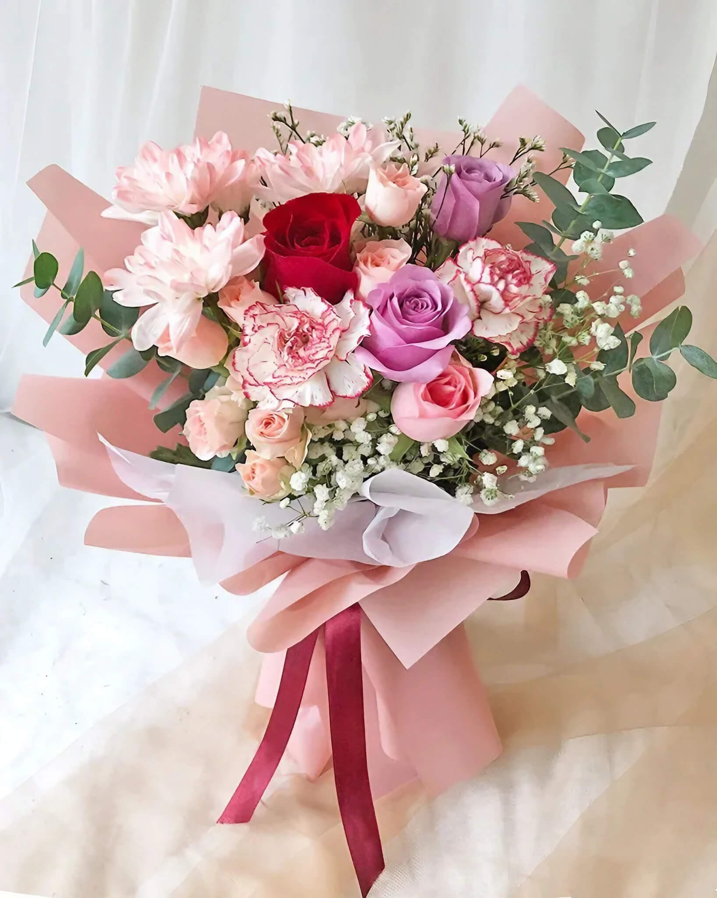

Rose Carnation with Chrysanthemums and Eucalyptus
Origin of Rose Carnation:
Rose carnations, also known as Dianthus caryophyllus, are native to the Mediterranean region. They have
been cultivated for thousands of years and are now grown in many parts of the world due to their
beauty and fragrance.
Origin of Chrysanthemums :
Chrysanthemums originated from Asia, specifically China and Japan.
They have been cultivated there for over 2,000 years and are highly valued for their beauty and
variety.
Origin of Eucalyptus:
Eucalyptus originated from Australia. It is native to that region and is known for its distinctive
aroma and versatile uses.